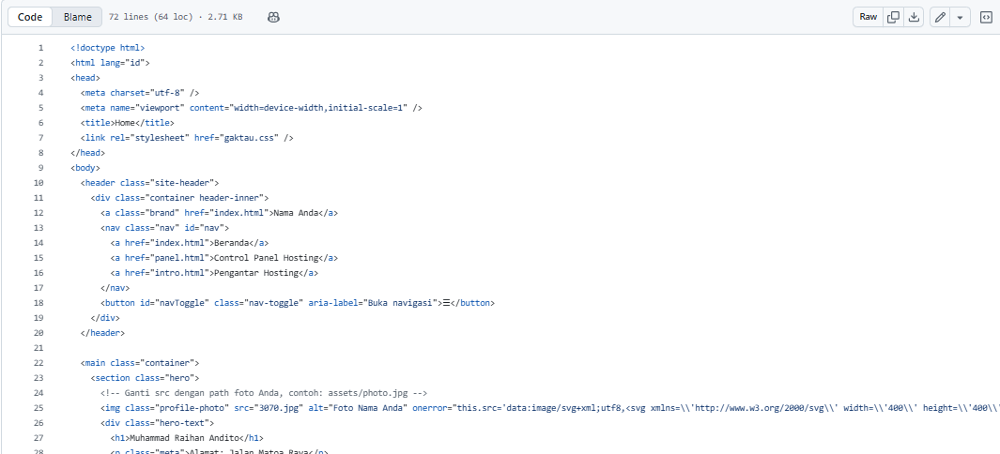

Control Panel Hosting
Control panel (panel kontrol) adalah antarmuka berbasis web yang digunakan untuk mengelola layanan hosting. Panel paling umum: cPanel, Plesk, DirectAdmin. Fungsi utamanya meliputi manajemen file, domain, email, database, dan pengaturan keamanan.
Fitur Utama
- File Manager — mengupload, mengekstrak, memodifikasi file website.
- Domain & Subdomain — menambahkan domain, mengelola DNS, membuat subdomain.
- Email — membuat alamat email, pengaturan forwarder, autoresponder.
- Database — membuat MySQL/MariaDB, phpMyAdmin untuk manajemen database.
- Keamanan — SSL/TLS, pengaturan firewall, backup & restore.
- Instalasi Aplikasi — softaculous atau installer lainnya untuk CMS (WordPress, Joomla).
Cara Umum Menggunakan
- Login ke panel (biasanya via port tertentu atau alamat khusus, contoh: https://yourdomain.com:2083 untuk cPanel).
- Gunakan File Manager untuk menaruh file website di direktori public_html atau www.
- Buat database jika website butuh MySQL; catat nama, user, password.
- Atur domain dan DNS bila perlu — pastikan A record mengarah ke IP server.
- Pasang SSL (Let's Encrypt atau yang disediakan hosting) untuk keamanan.
Tips Singkat
- Selalu backup sebelum melakukan perubahan besar.
- Gunakan password kuat untuk akun panel dan database.
- Pelajari log error bila website bermasalah (error logs di panel).
- Pelajari fitur installer otomatis untuk mempercepat setup CMS.
Gambar di atas hanya ilustrasi sederhana. Untuk praktik langsung, masuk ke control panel layanan hosting yang Anda gunakan.